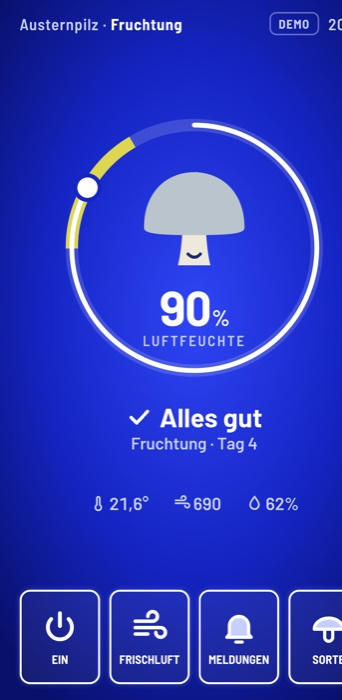
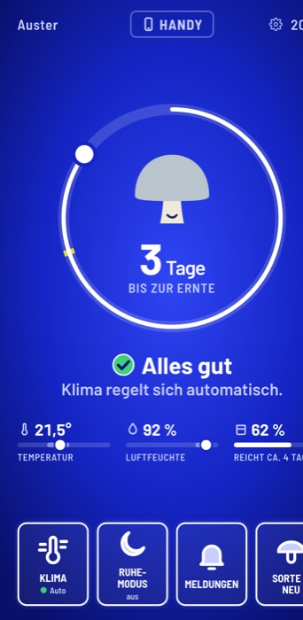
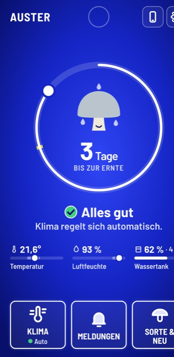
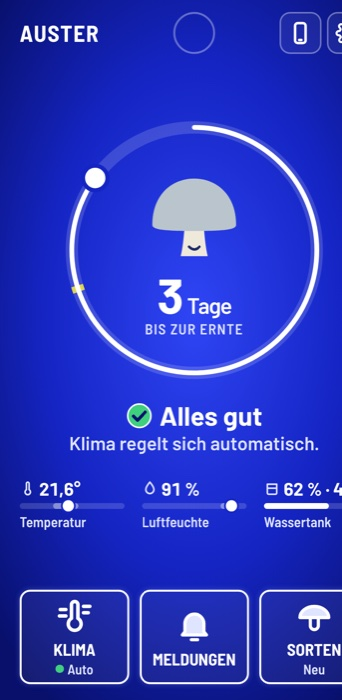

Pilz
GrowBox.
Eine Growbox, die aussieht wie ein Küchengerät, sich selbst um Licht, Feuchte und Wasser kümmert und an der jeder mit einem Blick sieht, ob alles gut ist.
Mensch-Maschine-Interaktion · Prof. Zagel
Hochschule Coburg · WS 2026/27
Felix Zimmermann · [Namen Team]
Was in diesem
Booklet steckt.
Erst für wen und was die Box können muss, dann wie sie entstanden ist und welche Technik drinsteckt, zuletzt wie man sie bedient. Jede Entscheidung steht mit dem Grund aus der Vorlesung und dem Nachteil, den wir dafür in Kauf nehmen.
- 03Für jeden gemacht.Zielgruppe · Ingrid und App-Nutzer
- 04Was die Box können muss.Nutzungskontext · Anforderungen
- 05Vom Aquarium zur Mikrowelle.Konzeptweg Box V1 → V3 · Abwägung
- 06Wie eine Mikrowelle. Nur ohne Knopfsalat.Die Box V3 annotiert
- 07Ein Taster. Eine Bedeutung.Bedienteile an der Box · Abwägung
- 08Vom Papier ins CAD.Konstruktion · zwei Module
- 09Vom Rohdruck zum Prototyp.Prototyp · FabLab
- 10Jedes Detail hat einen Zweck.3D-Modell · alle Features
- 11Klein für die Küche. Groß für mehr Ernte.Zwei Größen
- 12Ein Zustand. Zwei Ansichten.Pi, Display, App · echt und simuliert
- 13Drei Ideen. Eine gewählt.Leitideen, v1 → v3 · Abwägung
- 14Sieben Stände. Immer schlanker.v4 → v7 · Abwägung
- 15Warum Blau statt Schwarz?Farbe · Abwägung
- 16Ein Blick. Eine Aussage.Das Startbild lesen
- 17Eine Warnung. Ein Knopf.Fall 1 Tank leer · Fall 2 Ernte · Fall 3 Handy
- 18Die Hürde passt zum Risiko.Neu ansetzen ohne Fehler
- 19Bewusst weggelassen.Abwägungen und Grenzen
Was die Box
können muss.
Bevor wir gezeichnet haben, haben wir festgelegt, woran sich jede Entscheidung messen muss.
Abgeleitet aus Persona und Nutzungskontext, noch nicht durch Interviews erhoben (113).
Vom Aquarium
zur Mikrowelle.
Die Box sollte nicht nach Labor aussehen, sondern nach Küche. Deshalb haben wir uns die Front einer Mikrowelle geliehen: links das Fenster, rechts das Bedienfeld, dahinter verschwindet die Technik. Bis dahin waren es drei Schritte.


| Entscheidung | Grund (Folie) | Nachteil, den wir in Kauf nehmen |
|---|---|---|
| V1 → V2: ein Gerät statt zwei | Das Display hat einen festen Platz, kein Kabel liegt dazwischen. Die Form einer Mikrowelle kennt jeder (mentales Modell 56, Mikrowelle 8). | Der Technikraum kostet Breite. |
| iPhone statt 5″-Touchdisplay | Scharfes Display, die Web-Oberfläche lässt sich am Laptop testen und direkt zeigen (Prototypen 119–125). | Das iPhone ist nur Platzhalter für ein festes Display. |
| V2 → V3: größer, Tank mit Sichtfenster | Wasser unten, Elektronik oben, dazwischen eine Trennwand (Murphy 61). Die Linie im Fenster entspricht dem Balken auf dem Display (Mapping 77–79). | Mehr Stellfläche in der Küche. |
| Kamera fest, bewusst nicht beweglich | Nichts zu verstellen, immer derselbe Blick, die Bilder in der App bleiben vergleichbar (Konsistenz 80). Keine Mechanik, die ausfällt (Murphy 61). | Nur ein Blickwinkel, verdeckte Pilze sieht man nicht. |
| LED im Rahmen statt im Deckel | Der Deckel bleibt kabelfrei und abnehmbar. Alle Teile ≤ 250 mm passen aufs Druckbett. | Ein LED-Kanal in vier Profilen. |
Wie eine Mikrowelle.
Nur ohne Knopfsalat.
Folie 8 zeigt eine Mikrowelle, die niemand bedienen kann. V3 hat dieselbe Grundform, aber auf 33,5 × 25 × 20 cm nur drei Dinge zum Bedienen: ein Display, einen Taster, eine Einfüllöffnung.
1
2
3
4
5
- 1PilzkammerPlexiglas, Tür links angeschlagen. Man sieht die Pilze, ohne zu öffnen. Mikrowelle · 8
- 2DisplayEin fest eingebautes iPhone zeigt den Zustand auf einen Blick. Systemstatus sichtbar · 130
- 3TasterBeige, Ø 3 cm, Licht-Symbol. Schaltet nur das Licht. Affordance · 72–74
- 4Tank-SichtfensterDie Linie zeigt dasselbe wie der Balken „Wassertank“ auf dem Display. Mapping · 77–79
- 5EinfüllöffnungOben hinten, Ø 4 cm: eingießen wie bei einer Kaffeemaschine, weit weg vom Display. Wasser unten, Elektronik oben. Murphy · 61
Ein Taster.
Eine Bedeutung.
Zum Anfassen gibt es an der Box nur drei Teile: Taster, Türgriff und Deckelgriff. Jedes bekam eine klare Bedeutung: Was man anfassen soll, ist beige. Orange heißt überall Warnung.

| Entscheidung | Grund (Folie) | Nachteil, den wir in Kauf nehmen |
|---|---|---|
| Taster schaltet nur das Licht | Druckpunkt spürt der Finger (Homunculus 33), großes Ziel trifft die zitternde Hand (Speed-Accuracy 49), Knopf zeigt „drück mich“ (Affordance 72–74) | Alles andere läuft über das Display. |
| Taster weckt nicht auch das Display | Eine Handlung mit zwei Wirkungen würde beim Licht-Ausschalten das Display mit ausschalten (Modusfehler 60). | Kein Knopf, der „alles“ macht. |
| Taster und Griffe beige statt orange | Orange heißt auf dem Display „Warnung“. Eine Farbe, eine Bedeutung (Konsistenz 80). | Ein oranger Taster wäre auffälliger. |
| Kein Warnlicht an der Box | Die Warnung zeigt der orange Punkt auf dem Display, kein zweiter Kanal mit eigener Logik. | Fällt das Display aus, gibt es keine Warnung. |
| Tank vorn mit Sichtfenster (v2) | Füllstandslinie entspricht dem Balken auf dem Display (Mapping 77–79). | Der Technikraum braucht eine Trennwand. |
Ein Zustand.
Zwei Ansichten.
Damit Box und App nie Unterschiedliches zeigen, gibt es den Zustand nur an einer Stelle: im Raspberry Pi. Das Display an der Box und die App lesen ihn nur und schicken Befehle zurück.
| Baustein | Technik | Stand im Prototyp |
|---|---|---|
| Steuerrechner | Raspberry Pi, Python + FastAPI, HTTP und WebSocket für Live-Updates | entworfen, ruht: das Interface ging vor |
| Bedienfeld | Web-Oberfläche ohne Framework (HTML, CSS, JavaScript), im Safari-Vollbild, gesperrt per Geführtem Zugriff | läuft (v7), am Laptop ohne Hardware testbar |
| Taster und LED | gpiozero am Pi; LED-Streifen adressierbar, 5 V | echt; Ansteuerung der Streifen folgt |
| Messwerte | Temperatur, Feuchte und Tank, im Admin-Modus umschaltbar | simuliert, für die Vorführung |
| App | eigene App, liest denselben Zustand | Live-Sync am Mac gezeigt, mit dem Pi geplant |
| Gehäuse | CAD, 3D-Druck in PLA, Plexiglas 3 mm | gebaut (S. 08–09) |
Warum ein Zustand?
Model View Controller: ein Modell, mehrere Ansichten (99–100). Markiert der Power-User unterwegs eine Meldung als gesehen, zeigt die Box das sofort. Gleiche Wörter und Farben in beiden (Konsistenz 80–81).
Warum simuliert?
Im Prozess entstehen bewusst nur Prototypen, ihr Code ist nicht zum Weiterverwenden gedacht (Implementierung 109). Der Prototyp prüft Bedienung und Aussehen, nicht die Implementierung (Houde & Hill 122).
Drei Ideen.
Eine gewählt.
Vor dem ersten Bildschirm standen drei Leitideen. Gewählt haben wir B, weil Ingrid dabei am wenigsten lernen muss. In den ersten drei Ständen entstand daraus das Bild von heute: v1 hatte noch kein Pilz-Symbol und keine Gamification.
Pilz-Begleiter
Ein Pilz als Figur mit Stimmungen und Spielelementen.
Lenkt vom Zustand ab. Geblieben: der Pilz im Ring.
Radikal einfach
Ein Zustand aus Form, Farbe und Text, darunter wenige große Kacheln.
Ein Blick genügt (Model Human Processor 16–17).
Physisch zuerst
Taster, Drehknopf und LED-Ring statt Display.
Wieder Knopfsalat (8). Geblieben: ein Taster fürs Licht.



| Entscheidung | Grund (Folie) | Nachteil, den wir in Kauf nehmen |
|---|---|---|
| v1Status als großes Zeichen mit einem Wort | Eine Aussage pro Blick (Model Human Processor 16–17) | Noch kein Bild für das Wachstum, Zahlen ohne Ziel. |
| v1 → v2Blauer Grund aus dem Panel des Kollegen | Blau nur als Fläche, Statusfarben springen heraus (präattentiv 26, Farbsehen 22) | Gerade dieses Blau ist Gestaltung, nicht aus den Folien. |
| v2 → v3Ring zeigt Tage bis zur Ernte statt Feuchte | Klares Ziel und Fortschritt (Progression G 10, Flow G 12) | Die Feuchte wandert in eine kleine Zeile darunter. |
| v3Status immer Symbol + Farbe + Wort | Rot-Grün-Schwäche (Farbsehschwäche 23) | Mehr Platz pro Zustand. |
Sieben Stände.
Immer schlanker.
Ab v4 kam kaum noch etwas dazu. Jeden Stand haben wir an den Folien geprüft, und meist wurde dabei etwas weggenommen oder klarer gemacht. Bewerten und neu gestalten im Wechsel, wie im UCD-Kreislauf.




| Entscheidung | Grund (Folie) | Nachteil, den wir in Kauf nehmen |
|---|---|---|
| v4Automatik sichtbar: Kachel Klima zeigt AUTO | Man sieht, was das System tut (Gulf of Evaluation 59, mentales Modell 56) | Dazu kam ein Ruhemodus, den wir in v7 wieder gestrichen haben. |
| v55 → 3 Kacheln, „1 Min lüften“ nur in der App | Wenige große Ziele statt Knopfsalat (8, Fitts 50, minimalist design 130) | Wer eingreifen will, muss in die App. |
| v5Licht ohne Kachel, nur am Taster | Eine Funktion, ein Ort (Mapping 77–79) | Am Display lässt sich das Licht nicht schalten. |
| v6Ziele ≥ 44 pt, Warntext 6,4 : 1 statt 2,8 : 1 | Zitternde Hände, Lesebrille (Fitts 50, Sichtabstand 63, Kontrast 66) | Weniger Inhalt pro Bildschirm. |
| v7Pilz wächst in drei Stufen, „Erntebereit“ beige | Fortschritt ohne Spielfigur (Progression G 10); nichts ist kaputt, also kein Orange (80) | Keine Punkte, keine Belohnung. |
| v7Rahmen = drückbar, Linien = Information | Man sieht, wo man tippen kann (Affordance 72–73) | Infozeilen wirken schlichter. |
Warum Blau
statt Schwarz?
Das wurde in der Präsentation gefragt. Die Antwort: Schwarz hat schon eine Bedeutung. Schwarz heißt Standby, Blau heißt die Box läuft.


| Entscheidung | Grund (Folie) | Nachteil, den wir in Kauf nehmen |
|---|---|---|
| Blau im Betrieb | Schwarz ist für Standby reserviert. Blau als Fläche, nicht als Schrift (Blau-Zapfen 20, 22). | Wer Schwarz lieber mag, muss es einstellen (Hoher Kontrast, 66). |
| Nur der Warnpunkt blinkt, nur im Standby | Bewegung fällt sofort auf, ohne Suchen (präattentiv 26–27). | Eine Warnung im laufenden Betrieb blinkt nicht. |
| Bewusst minimalistisch | Keine Uhr, drei Kacheln statt sechs, Seltenes hinter dem Zahnrad (Nielsen: minimalist design 130). | Urlaub, Sprache und Hilfe liegen einen Tipp tiefer. |
Ein Blick.
Eine Aussage.
Aus der Ferne sieht Ingrid, ob etwas zu tun ist. Aus der Nähe sieht sie, was. Jede Information steht genau einmal da.
 1
2
3
4
5
1
2
3
4
5
- 1WarnpunktLeuchtet orange bei einer Warnung. Im Standby blinkt nur er. präattentiv · 26–27
- 2Ring = FortschrittTage bis zur Ernte. Der Pilz wächst in drei Stufen. Progression · Flow (Gamification)
- 3StatusImmer Form + Farbe + Text, nie Farbe allein. Farbsehschwäche · 23
- 4Drei WerteImmer Zahl, Balken und Name. Der Tank als Füllstand. Konsistenz · 80
- 5Drei KachelnGroße Ziele. Ein Rahmen heißt: drückbar. Fitts 50 · Affordance 72–73
grüner Kreis mit Haken

gelbes Dreieck, Text und ein Knopf

beiger Kreis mit Pilz
Eine Warnung.
Ein Knopf.
Ingrid muss nichts einstellen. Sie handelt nur, wenn die Box sie braucht, und bekommt auf jede Handlung sofort eine Rückmeldung.


Die Hürde passt
zum Risiko.
Wer mitten im Wachstum neu ansetzt, verliert seine Pilze. Wer nach der Ernte neu ansetzt, verliert nichts. Deshalb fragt die Box unterschiedlich streng.


Hürde nach Risiko
Mitten im Wachstum
Nach der Ernte
Murphy · 61 · Nielsen: Fehler vermeiden · 130
Erst Übersicht, dann Detail
Eigene Sorte an der Box nur nach der Ernte. Werte eingeklappt, feste Schritte mit Grenzen. Wer mehr will, zoomt in der App hinein.
Zoomable UI · 101–102
72–73 Affordance · 80 Konsistenz
Bewusst weggelassen.
Und was noch offen ist.
Ein einfaches Bedienfeld entsteht vor allem durch das, was fehlt. Jede Lücke ist eine Entscheidung, und jede hat einen Preis.
| Weggelassen | Grund (Folie) | Nachteil, den wir in Kauf nehmen |
|---|---|---|
| Keine Uhr im Display | Für die Pilze unwichtig, jede Angabe mehr lenkt ab (minimalist design 130). | Wer die Zeit sucht, schaut woanders hin. |
| Kein Eingriff ins Klima an der Box | Jede Ausnahme ist ein Zustand, den man vergisst (Modusfehler 60, Murphy 61). | „1 Min lüften“ gibt es nur in der App. |
| Kein Ruhemodus, kein Handsensor | Das Display bleibt an, der Warnpunkt ist aus 3 m sichtbar (präattentiv 26–27). | Das Display braucht dauerhaft Strom. |
| Kein Warnlicht an der Box | Ein Kanal für Warnungen, der orange Punkt reicht (Konsistenz 80). | Fällt das Display aus, sieht Ingrid keine Warnung. |
| Verläufe nur in der App | Erst Übersicht, dann Detail (Zoomable UI 101–102). | Die Box zeigt nur das Jetzt. |
Geprüft
- ✓Nielsen-Heuristiken: 9 von 10 erfüllt (130). Es fehlt „Help and documentation“.
- ✓Warntext-Kontrast 6,4 : 1, vorher 2,8 : 1 (66).
- ✓Farbsimulation Rot-Grün: Status nie nur über Farbe (23).
Grenzen
- –Die Personas sind Annahmen, nicht befragt.
- –Messwerte sind simuliert, echt sind Taster und LED.
- –Noch kein Test mit echten Nutzern.